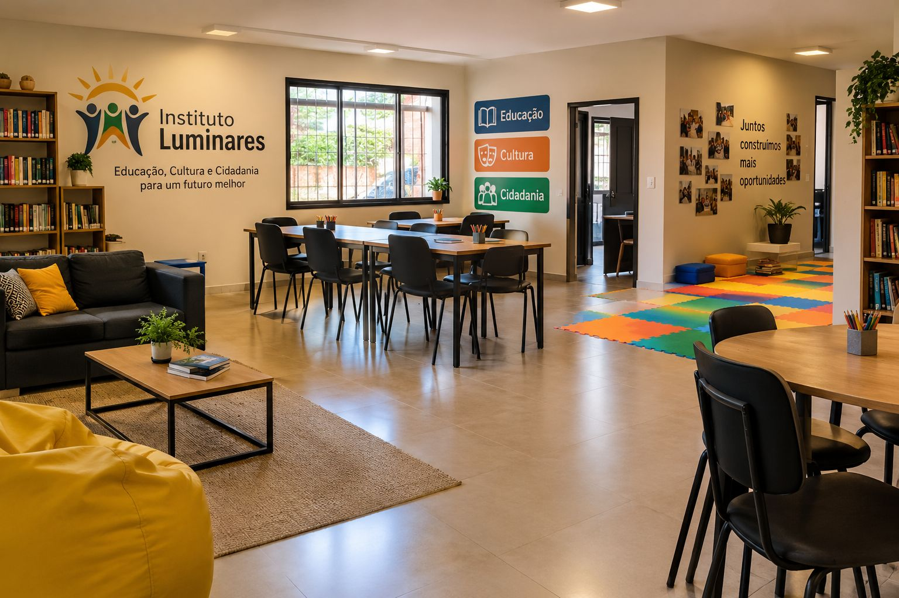

Missão
Promover educação, cultura e cidadania, oferecendo acesso a oportunidades que transformem a vida de crianças, jovens e famílias.
O Instituto Luminares é uma organização sem fins lucrativos que acredita no poder da educação e da cultura para iluminar caminhos e ampliar oportunidades em comunidades em situação de vulnerabilidade.

Promover educação, cultura e cidadania, oferecendo acesso a oportunidades que transformem a vida de crianças, jovens e famílias.
Ser referência em transformação social por meio da educação, construindo uma sociedade mais justa e solidária.
Endereço: Rua das Acácias, 250, Centro, Curitiba, PR, CEP 80000-000
Telefone: (41) 3000-0000
E-mail: contato@institutoluminares.org.br
Horário: segunda a sexta, das 8h às 17h